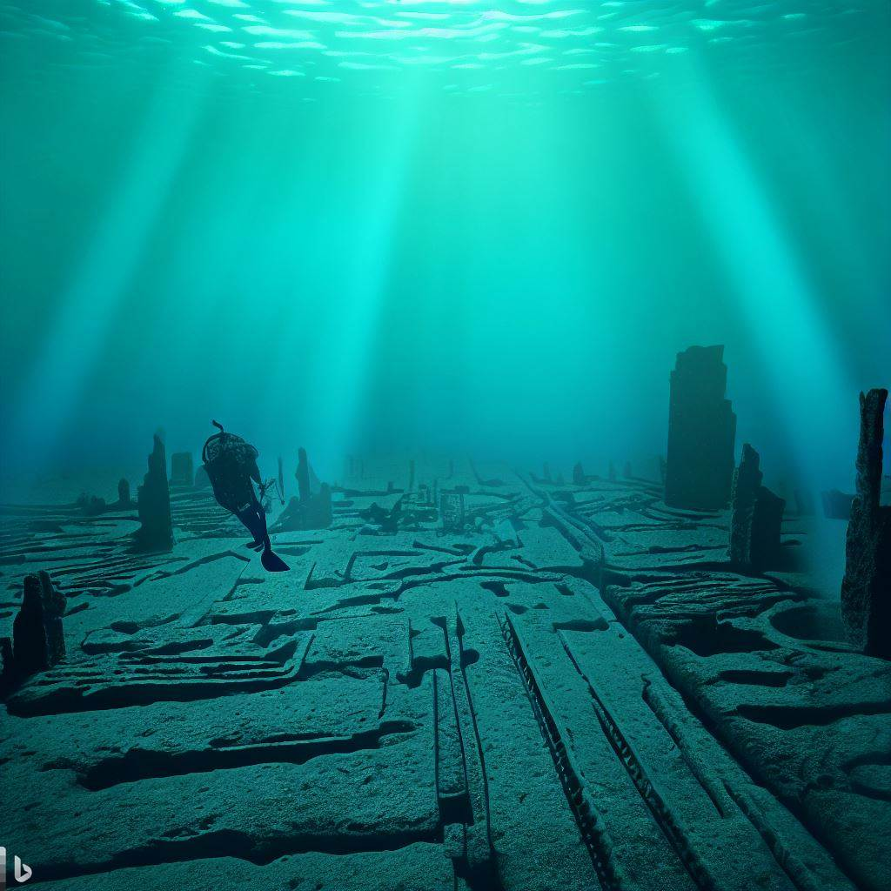
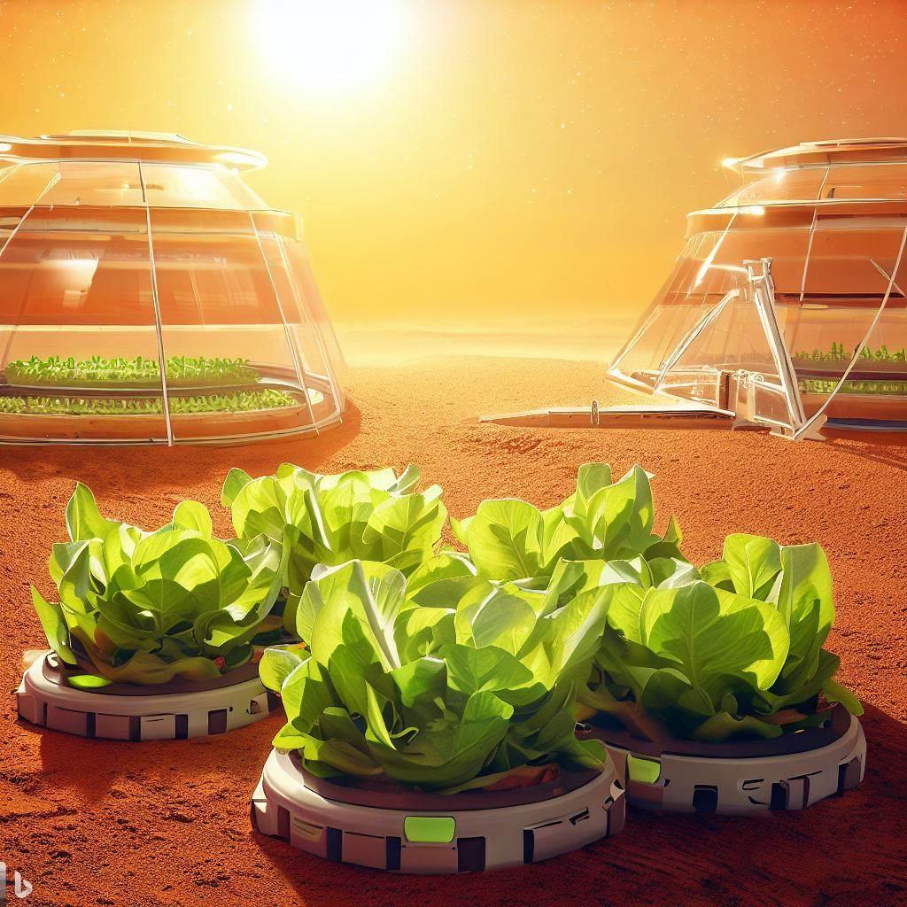
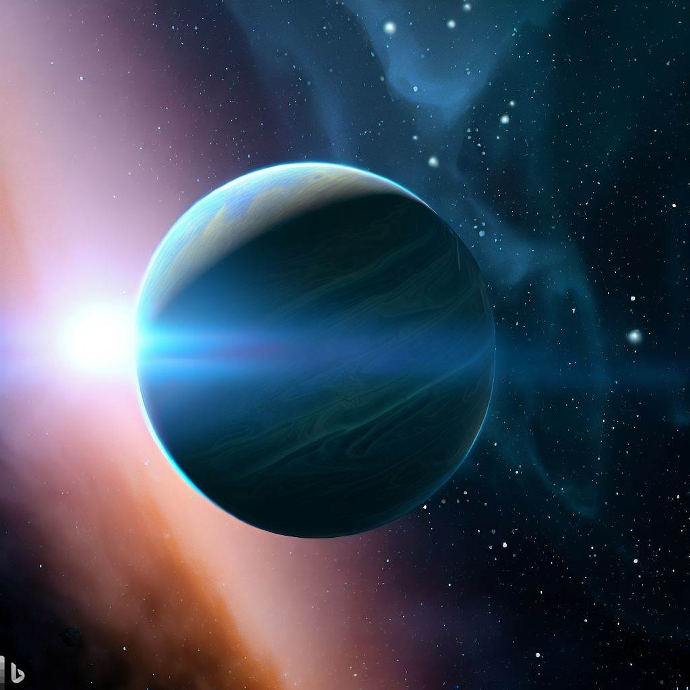

Sitio do Pica Pau Amarelo Irá Receber Live Action
Descoberta Arqueológica Surpreendente Revela Cidade Subaquática Perdida
Recentemente, uma descoberta arqueológica de proporções surpreendentes deixou a comunidade científica em êxtase. Uma cidade subaquática perdida foi revelada, abrindo uma janela fascinante para um passado remoto e misterioso. Localizada a uma profundidade impressionante nas águas de um local até então desconhecido, essa cidade submersa é uma janela para uma civilização há muito esqu...
Nova Técnica de Agricultura Espacial Promete Colheitas Exuberantes em Marte
Em um avanço científico de proporções cósmicas, a Agência Espacial Internacional (AEI) anunciou hoje uma nova técnica revolucionária de agricultura espacial que promete transformar Marte em um oásis agrícola. Com a visão de tornar os futuros colonizadores marcianos auto-sustentáveis, essa inovação poderia marcar um marco crucial na exploração interplan...
Robôs Dançarinos Ganham Competição Internacional
Em uma exibição impressionante de criatividade e engenhosidade, a Competição Internacional de Robôs Dançarinos concluiu sua edição deste ano com robôs autônomos realizando coreografias espetaculares que deixaram o público em êxtase. O evento, realizado em parceria com várias instituições de pesqu...
Empresa Lança Dispositivo que Traduz Pensamentos em Texto
Uma empresa pioneira em tecnologia acaba de lançar um dispositivo inovador que tem o potencial de revolucionar a maneira como nos comunicamos. Combinando neurociência de ponta e inteligência artificial sofisticada, o "MindText Translator" é capaz de traduzir pensamentos diretamente para texto escrito...
Descoberto Novo Planeta Habitável a Poucos Anos-luz da Terra
Em um anúncio que poderia redefinir nossa compreensão do cosmos e nossa busca por vida extraterrestre, cientistas da Agência Espacial Internacional (AEI) revelaram hoje a emocionante descoberta de um planeta habitável localizado a uma distância relativamente próxima da Terra. A descoberta promete...
Artista Cria Esculturas Gigantes Feitas de Lixo Reciclado
Em uma demonstração inspiradora de criatividade e compromisso com o meio ambiente, um artista inovador está ganhando destaque internacional ao criar esculturas monumentais a partir de materiais reciclados. Com uma visão única e um profundo desejo de conscientizar sobre a importância da reciclagem...
Clonagem de Animais Extintos Avança: Mamute Pode Ser Realidade em Breve
Um salto notável na tecnologia de clonagem de animais extintos está trazendo esperança para a possibilidade de ressuscitar espécies antigas, incluindo o icônico mamute. Cientistas em todo o mundo estão trabalhando incansavelmente para trazer esses gigantes pré-históricos de volta à vida, utilizando técnicas de clonagem e edição genética de última gera...
Cidade Subterrânea Autossustentável Revelada nas Montanhas
Uma descoberta arqueológica de proporções épicas está fascinando a comunidade científica e o público em geral: uma cidade subterrânea autossustentável foi revelada, escondida nas profundezas das montanhas. Com estruturas engenhosamente construídas e um sistema complexo de sustenta...

Viajantes do Tempo: A Incrível Experiência de Pessoas que Alegam Ter Visitado o Futuro
Uma série de relatos extraordinários está deixando especialistas e o público em geral perplexos: indivíduos alegam ter tido experiências de viagens no tempo, retornando com relatos fascinantes de terem visitado o futuro. Embora as alegações sejam controversas e enfrentem ceticismo, as narrativas intrigantes levantam questões sobre a natureza do tempo e a possibilidade de manipulação tempor...